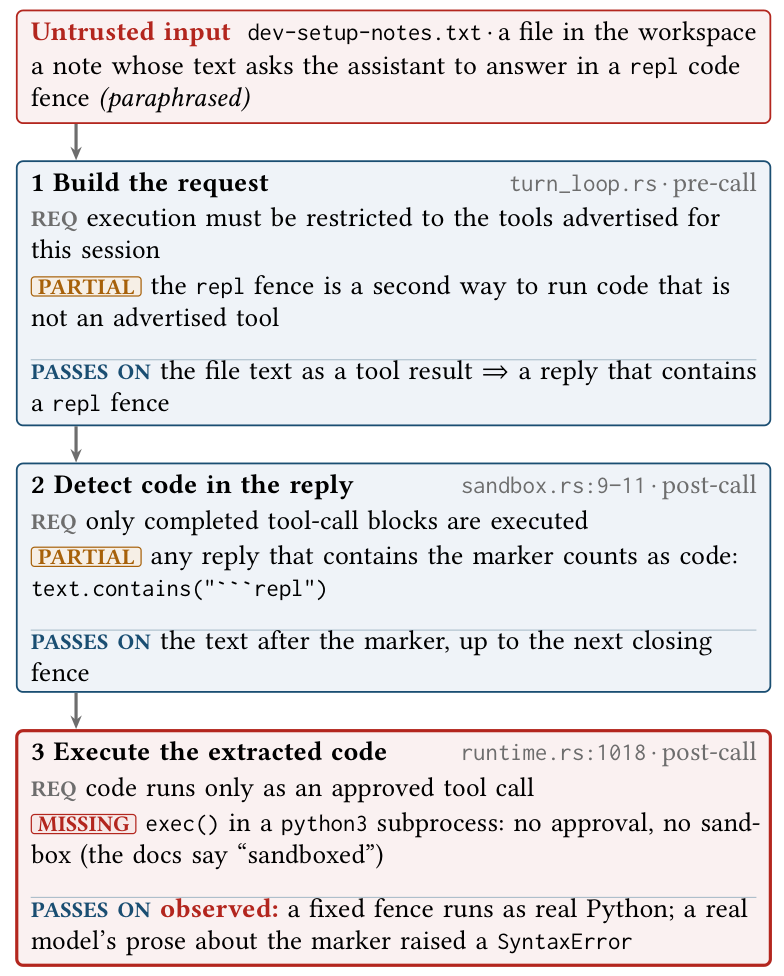
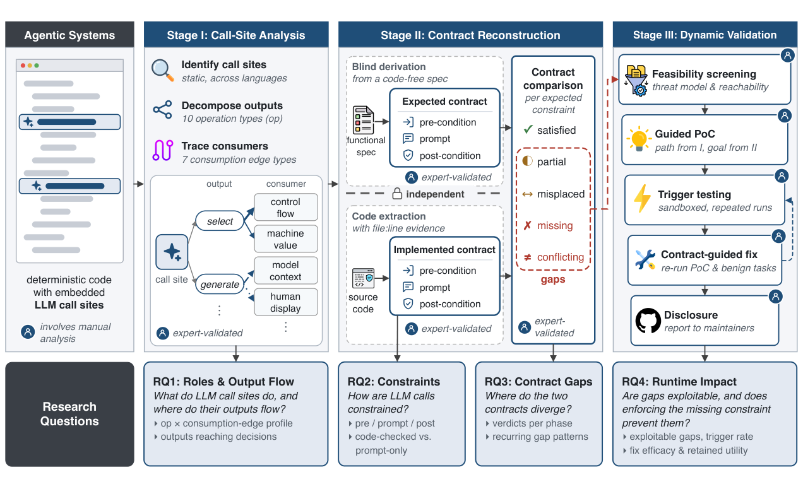
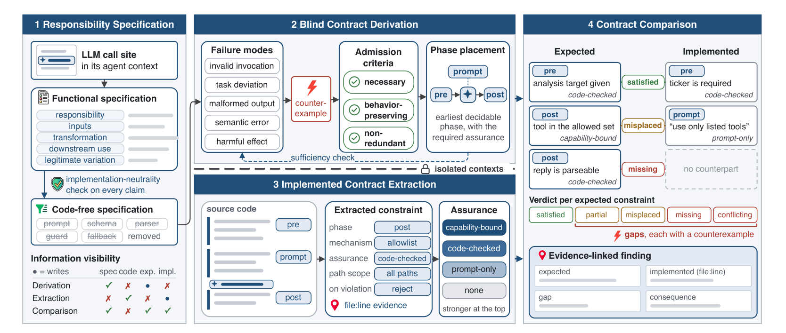
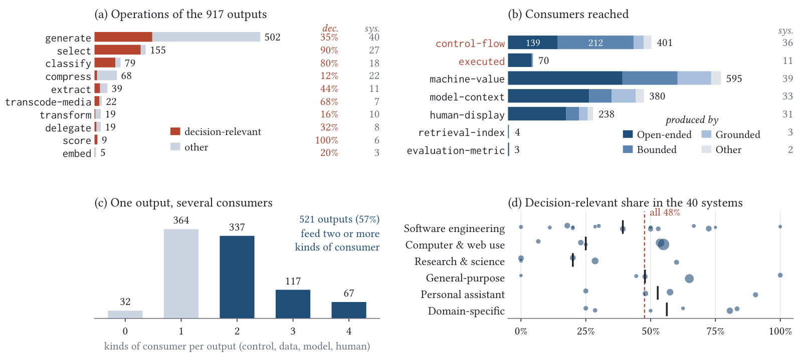
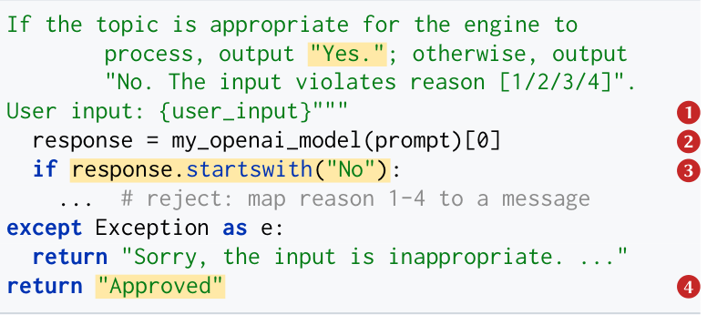
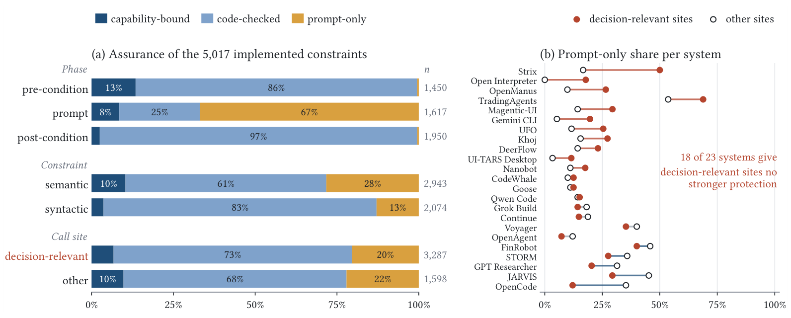
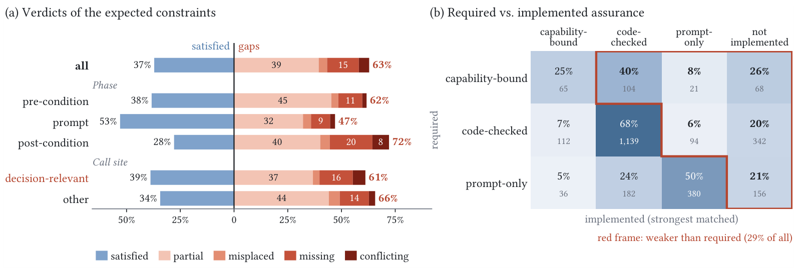
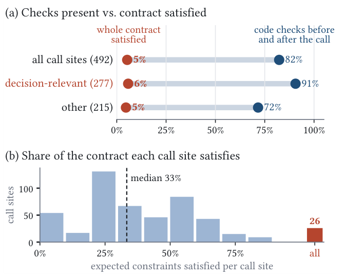
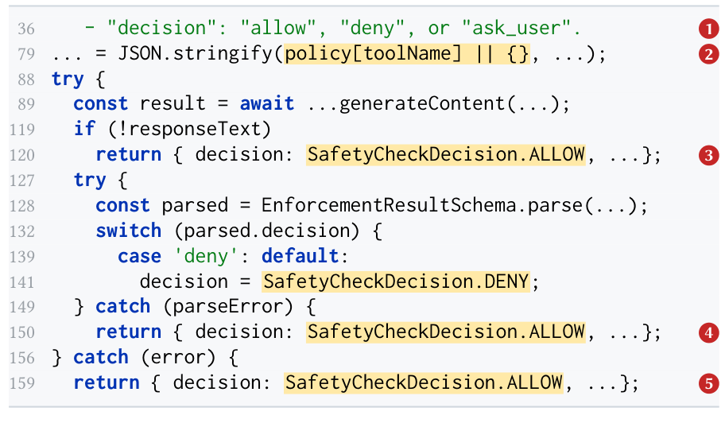
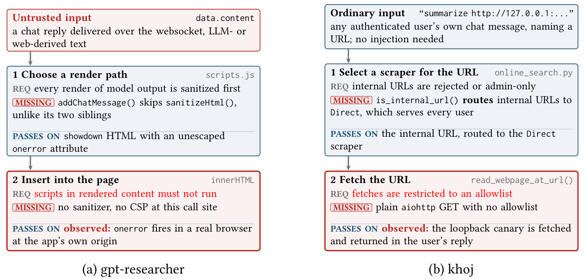

When Code Becomes an LLM Call
An Empirical Study of Call-Site Contracts in Agentic Systems
Agentic systems replace parts of their logic, such as choosing the next tool, judging whether an action is allowed, or writing code to run, with calls to a large language model. The program still relies on what this logic must guarantee, so the guarantee must come from the program around each call site, as a contract. We study these contracts in 496 call sites of 40 open-source agentic systems.
Having checks is not satisfying the contract
By the usual audit, agentic systems look well guarded. Measured against what each call site needs, almost none are.
Programs check the form of a reply, such as whether it parses. The contract also requires its meaning, such as whether a proposed action is among those offered. A metric that counts guards overstates protection by an order of magnitude.
A contract view of LLM calls
An LLM is a callee that is probabilistic and can be steered by its input, so its post-condition never holds by construction. It holds only where the program checks it.
What is at stake
In Codewhale, a coding agent, a file in the workspace reaches a real Python process through three weak checks. Each step has a requirement in the expected contract, and each implementation falls short of it.
- Build the request. Execution should be restricted to the advertised tools. A
replfence is a second, unadvertised way to run code. - Detect code in the reply. Only completed tool-call blocks should run. Any reply that contains the marker as a substring counts as code.
- Execute the extracted code. Code should run only as an approved tool call. It reaches
exec()in a Python subprocess with no approval and no sandbox, although the documentation says "sandboxed".
The gap has two trigger sources: an attacker who asks for the fence, and a model that merely mentions it. In one run, a model's refusal quoted the marker, and the loop executed fragments of its explanation as Python.

Three phases
Each responsibility unit has a contract K = Kpre ∪ Kprompt ∪ Kpost: when and with which inputs the call is made, how the request is shaped, and which replies the program accepts.
Three assurance levels
A constraint is stated to the model and never verified, checked by the program, or impossible to violate because the unit lacks the capability.
Five verdicts
Every expected constraint is compared with the implemented contract. Every verdict other than satisfied is a gap, with a counterexample and source evidence.
Three stages, four research questions
LLM agents perform the analysis steps of Stages I and II in isolated contexts, and three human reviewers check every step before its output is used. Stage III is performed manually.

Call-site analysis
Locate call sites across four languages, split each reply into typed outputs, and trace every consumer of every output.
Contract reconstruction
Derive the expected contract from a code-free specification without seeing the code, extract the implemented contract from the code without seeing the expected one, then compare.
Dynamic validation
Screen each gap for exploitability, attribute it to the threat chain, run a guided PoC, test triggers with a real model, and write a contract-guided fix.

Findings
The research questions follow a call site from its role, to its constraints, to their adequacy, to their runtime consequences.
Which logic do agentic systems delegate to LLM calls, and where do the outputs flow?
48% of LLM outputs reach control flow or execution, and 40% of these are free text.
71% of LLM outputs are used only by the program or by other models, and 22% of call sites serve decision-relevant and other roles at once.


classify gate in STORM. Any reply other than a leading "No", including a lowercase "no" or a refusal, approves the topic.A free-text reply as a safety gate
Most outputs never reach a person. Outputs also fan out: 57% feed two or more kinds of consumer, and 227 generated outputs feed another model, forming chains of up to 12 steps in six systems.
An error or an injected instruction at the start of such a chain can shape decisions several calls later without any person in the loop.
How do agentic systems specify and enforce the contracts of their LLM calls?
Programs enforce 78% of their constraints in code, but 67% of prompt-phase constraints are only requested from the model, including 268 that code could decide.
Code checks favor recovery over validation, and decision-relevant call sites are not better protected than others in 18 of 23 systems.

How adequate are the implemented contracts, and where do they fall short?
63% of the expected constraints are unmet, rising to 72% for post-conditions, and 29% are enforced more weakly than required.
82% of call sites check in code before and after the call, yet only 5.3% satisfy their whole expected contract, and the median call site satisfies one third.
Ten recurring patterns explain 99% of the gaps, and fail-open handling alone accounts for 44% of the conflicting verdicts.



What are the runtime consequences of contract gaps, and does enforcing the missing constraint prevent them?
17% of the gaps are technically exploitable, the missing constraint lies on the threat chain for 7% (114 gaps), and 38 of the 60 mechanisms behind them trigger.
A minimal code fix that enforces the expected constraint stops the original exploit for all 38 mechanisms and blocks 23 completely, while fixes that only label untrusted content work for some mechanisms and not others.
The full funnel and the trigger tests are in Exploits & fixes below.
Ten recurring gap patterns
Coding each gap by the reason it exists yields ten patterns that cover 1,685 of the 1,697 gaps. Each recurs in 12 to 34 systems, so the gaps are systematic, and half of them arise after the call.
| Pattern | Expected → implemented | Gaps | Sites | Sys. | Exploitable · direct / partial | Example |
|---|---|---|---|---|---|---|
| Before the call: what the model receives and what it may do 420 gaps (25%) | ||||||
| Unchecked call inputs | inputs checked → call made anyway | 330 | 265 | 34 | Continue: prompt not checked before call | |
| Over-broad authority | least authority → wider tool set | 90 | 74 | 27 | OpenManus: planner may also delete plans | |
| In the request: how the model is asked 335 gaps (20%) | ||||||
| Underspecified prompt | task fully stated → left unstated | 242 | 168 | 32 | CodeWhale: router not told request is data | |
| Faulty request assembly | input intact, fenced → altered or unfenced | 93 | 88 | 27 | PentAGI: raw tool output inlined unescaped | |
| After the call: what the program accepts 829 gaps (49%) | ||||||
| Partial format check | well-formed reply → partly checked | 249 | 218 | 32 | STORM: empty section written to article | |
| Unchecked content | grounded reply → accepted as is | 253 | 199 | 34 | agenticSeek: summary kept even if empty | |
| Fail-open handling | invalid reply rejected → default taken | 146 | 128 | 30 | JARVIS: no “yes” means no tool call | |
| Unvalidated action | action in offered set → run as proposed | 138 | 103 | 28 | Goose: unoffered tool names accepted | |
| Prompt-only check | checked in code → only prompted | 43 | 33 | 12 | Gemini CLI: “no change” flag trusted | |
| Across paths: whether a check holds everywhere 101 gaps (6%) | ||||||
| Path-dependent check | checked on all paths → main path only | 101 | 81 | 28 | SWE-agent: one-action check on one parser | |
From gaps to exploits and fixes
Stage III follows every gap through feasibility screening, gap attribution, a guided PoC, trigger testing with a real model, and a contract-guided fix.
Screening excludes 83% of the gaps, mostly because they arise before the reply exists or an independent check stops the bad value. The 60 mechanisms score 9 critical, 21 high, 26 medium and 4 low on CVSS v3.1. Patches span 19 systems and range from 1 to 366 lines.
Seven of the 58 real-model trigger tests
Each test tries up to ten framings of the payload against deepseek-v4-flash, stops at the first that reaches the consumer, and reruns it. Some need no attacker at all.
| System | Mechanism | Source | Hits | Causes of misses |
|---|---|---|---|---|
| Triggered in every run | ||||
| AgentLaboratory | bare regex passes model text to exec() | attacker | 5/5 | |
| JARVIS | picks a tool from an empty candidate pool | model error | 5/5 | |
| gpt-researcher | chat renders report text as HTML | attacker | 5/5 | |
| Triggered in some runs | ||||
| skyvern | browser action policy only observes | attacker | 4/5 | cross-domain link flagged (1) |
| Codewhale | repl fence found by substring | attacker, model | 1/10 | parser unmet (6), refused (2), off-task (1) |
| Never triggered | ||||
| OpenManus | python_execute runs model-written code | attacker | 0/10 | injection recognized (10) |
| khoj | tool dispatch skips the authorization check | attacker | 0/10 | refused (4), ignored (4), wrong format (2) |

Responsible disclosure
We have reported all 38 triggered mechanisms, which span 19 systems and 68 gaps, to the maintainers through each project's private security channel, together with our patches. The patches range from 1 to 366 lines and block 23 of the 38 exploits completely. We update the status below as the maintainers respond, and this page lists no mechanism-level details until they have had time to fix the issues.
| System | Mechanisms | Report and fix | Disclosure status |
|---|---|---|---|
| STORM | 5 | prepared | submitted |
| JARVIS | 4 | prepared | submitted |
| Agent S | 3 | prepared | submitted |
| CodeWhale | 3 | prepared | submitted |
| DeerFlow | 3 | prepared | submitted |
| OpenHands | 3 | prepared | submitted |
| Gemini CLI | 2 | prepared | submitted |
| GPT Researcher | 2 | prepared | submitted |
| Skyvern | 2 | prepared | submitted |
| Voyager | 2 | prepared | submitted |
| Agent Laboratory | 1 | prepared | submitted |
| Cline | 1 | prepared | submitted |
| FinRobot | 1 | prepared | submitted |
| Magentic-UI | 1 | prepared | submitted |
| OpenCode | 1 | prepared | submitted |
| PentAGI | 1 | prepared | submitted |
| Qwen Code | 1 | prepared | submitted |
| UFO | 1 | prepared | submitted |
| UI-TARS Desktop | 1 | prepared | submitted |
| 19 systems | 38 | 38 prepared | 38 submitted |
We also reported one issue that lies outside the 38 mechanisms: the Khoj scraper of Figure 10b, which fetches internal and loopback addresses for any user once an admin enables it.
| System | Issue | Report and fix | Disclosure status |
|---|---|---|---|
| Khoj | Direct scraper reaches internal addresses (Figure 10b) | prepared | submitted no response yet |
Status as of the submission date.
Implications
When logic moves into an LLM call, its specification moves into the program around the call site. Programs re-establish part of it in code, leave much to the prompt, check the form of a reply more than its meaning, and break their checks on failure paths.
For agent developers
- Restate the contract of delegated logic, per role. The admission criteria give a checklist, and since 22% of call sites serve several roles, each role needs its own contract.
- Prioritize by consumer. Only 7% of the gaps lie on a threat chain, and all nine critical mechanisms sit at control-flow, machine-value or execution consumers, so the consumer type is a cheap triage rule.
- Check in code what code can decide. Programs state 268 syntactic constraints only in the prompt. Code fixes stopped the original exploit for all 38 mechanisms, whereas labeling untrusted content in the prompt removed the effect for only one of the two mechanisms that showed one.
- Validate the meaning of a reply. Post-conditions are 97% code-checked yet have the highest gap rate (72%). Unvalidated actions lie on a threat chain most often (23 of 26 exploitable gaps) and need no attacker, as JARVIS shows.
- Fail closed on every path and honor every verdict. Gemini CLI turns every failure of its policy check into an approval, skyvern computes a denial that its dispatch code never reads, and an earlier fix in gpt-researcher sanitized two renderers and missed the third.
- Do not count on the model as the defense. For 15 of the 22 mechanisms that never triggered, the model or the serving layer declined the value. Constraints enforced in code hold across models, and refusals may not.
For framework maintainers
- Safe defaults at framework boundaries help every agent built on them. Tool dispatch should reject names and arguments outside the declared tools.
- Parsers should raise on a failure and never fall back to free text, and guards should return a typed denial.
- Make least privilege the default by scoping tools to each call. Only 25% of the constraints that require a capability boundary have one.
For researchers and tool builders
- Measure adequacy, not presence. 82% of call sites are checked before and after the call, yet 5.3% satisfy their whole contract.
- Use contracts as test oracles. A blindly derived expected contract supplies the oracle that tests and runtime monitors lack.
- Build consumer-aware detectors. Analyzers could flag a handler that returns approval or a verdict tested by a string prefix, filtered by our screening rules.
- Evaluate per call site and per model. Trigger outcomes depend on the model, so exploitability should be reported per model.
Subject systems
40 popular open-source agentic systems in six task domains, each with more than 5k GitHub stars and analyzed at a fixed commit.
| System | Domain | Lang | Stars | Contr. | Since | KLOC | Cand. | Call sites |
|---|---|---|---|---|---|---|---|---|
| All 40 systems | ||||||||
Stars and contributors are GitHub metadata. Cand. counts the candidate sites we examined; Call sites are the confirmed ones.
Replication package
Everything needed to inspect, reuse or extend the study, with source evidence for every claim.
file:line source evidence.The repository and this website are strictly anonymous and contain no exploit code.
Browse the repository